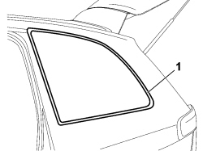
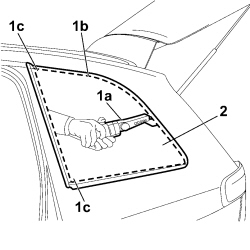
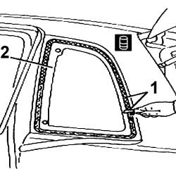
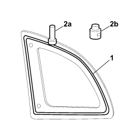
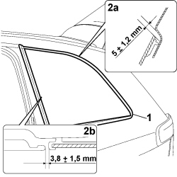
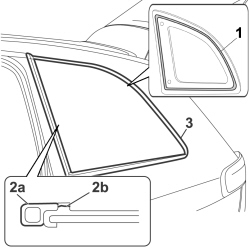
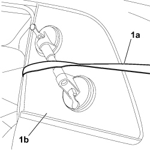

7035C14 FIXED REAR SIDE WINDOW (ONE) LEFT OR RIGHT - R.R INCLUDES CLEANING HOUSING
- Path
- Procedures > 70 FITTINGS > 7035 BODY WINDOW GLASSES > 7035C PASSENGER COMPARTMENT SIDE FIXED WINDOWS > 7035C14 FIXED REAR SIDE WINDOW (ONE) LEFT OR RIGHT - R.R INCLUDES CLEANING HOUSING
- Kind
- repair procedure (removal / refitting; the operation number is the code)
- Applies to
- all engines; all production periods
- Interactive page
- https://sloeber94.github.io/elrnDB-fCrm/en/#/194001008
Applies to: all engines; all production periods
 Removing
Removing
 Refitting
RefittingOp. 7040H42 REAR PILLAR TRIM (ONE), LEFT OR RIGHT- R.R
Op. 7040H50 REAR PANEL (ONE), LEFT OR RIGHT - R.R
1. Apply a double layer of protective adhesive tape to the edges of the bodywork along the entire perimeter of the window.

Applies to: all engines; all production periods
- Fit the suction pads to work safely.
1. Using a vibrating knife (1a) with a suitable blade, cut the bead of sealant (1b) along the entire perimter of the glass. Take care during the cutting stage over the window centering pins (1c).
2. Remove the window.

Applies to: all engines; all production periods
Refitting
Removing1. Using suitable equipment, cut and level the bead of sealant in the side window housing leaving a thickness of between 0.25 and 1 mm, taking care not to scratch the paintwork. The thickness of the sealant remaining in the housing will act as a support for the new bonding.
2. Thoroughly clean the side window housing using an air jet and degrease fully using heptane. When bonding, 60 minutes after the bead of sealant has been cut and levelled, the surface of the actual sealant must be treated using the special activating product and it is necessary to wait for 15 minutes before fitting the side window.

Applies to: all engines; all production periods
- If necessary, retouch the paintwork.
Preparing new side window:
1. Degrease the serigraphed perimeter of the new window using heptane.
2. Apply the glass adhesion promoter (primer) (2b) to the serigraphed perimeter using the wick (2a) supplied in the Kit.

Applies to: all engines; all production periods
1. Remove the adhesive tape from the edges of the bodywork along the perimeter of the side window.
2. Carry out a test fitting positioning the side window so that the values indicated in details (2a) and (2b) are achieved.

Applies to: all engines; all production periods
- Remove the window from the housing.
1. Using a spray gun apply a bead of sealant along the perimeter of the rearscreen as evenly as possible.
2. Fit the seal (2a) to the side window sticking it in its housing (2b).
3. Place the window in position, complete with seal, straight after applying the sealant and let it bed into position making sure that the gap between the window and the bodywork is correct.
Component | Type | Description | Classification | Qty. | Validity |
|---|---|---|---|---|---|
Fixed window glass (3rd window) | Windscreen sealant | Product n° 71711976 | - | - |

Applies to: all engines; all production periods
1. Position the belt (1a), as illustrated, and tension it so that even pressure is exerted on the entire side window (1b) to ensure that the matching between the glass and the bodyshell is correct.

Applies to: all engines; all production periods
Check that there are no penetration points by carrying out a watertightness test.